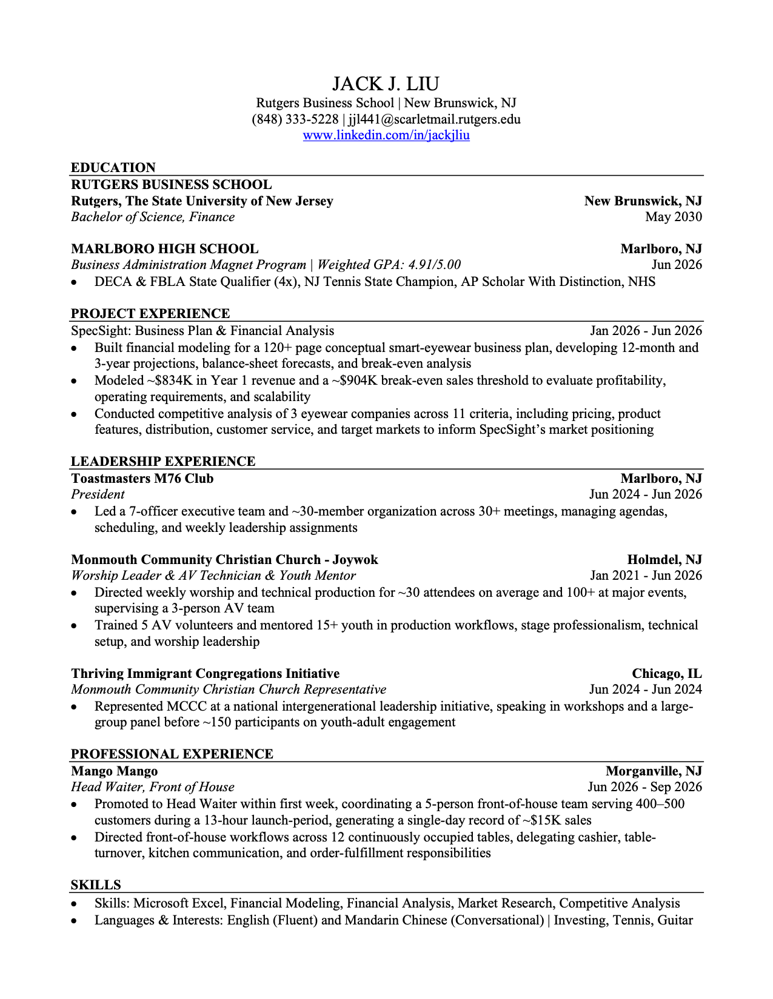

Jack Liu
Finance, B.S. · Rutgers Business School–New Brunswick · Expected May 2030
I'm a first-year finance student at Rutgers, most interested in asset management and equity research, and more broadly in how businesses are valued. This site collects my work so far, starting with SpecSight, a business plan for a smart-eyewear concept that I wrote with a classmate.
Selected work
Experience & leadership
About
I'm in my first year at Rutgers Business School–New Brunswick, studying finance. Asset management and equity research interest me most, and I'm keeping an open mind about the rest while I learn what each path involves from people who do the work.
My interest goes back to eighth grade, when I was choosing a high school program. My father travels to business meetings across Europe and Asia, and his example made me want a career in business, so the Business Administration Magnet Program at Marlboro High School stood out. Over four years it took me from stocks, portfolios, and Excel through accounting and economics to ethics, entrepreneurship, and business law, with a speaker series that brought in entrepreneurs, CPAs, and executives, including Steve Forbes. In senior year we spent six months building a business plan, which is where SpecSight came from.
My Christian faith is a meaningful part of who I am. Faith and community have shaped how I listen, build relationships, and serve, including five years leading worship and running AV at my church. Outside class I play tennis and guitar, and I speak English and conversational Mandarin.
At Rutgers
Coursework
Involvement
Looking ahead
Resume

Education
Contact
I'm glad to hear from recruiters, Rutgers alumni, and anyone in the industry who is open to a conversation.
- linkedin.com/in/jackjliu
- GitHub
- GitHub